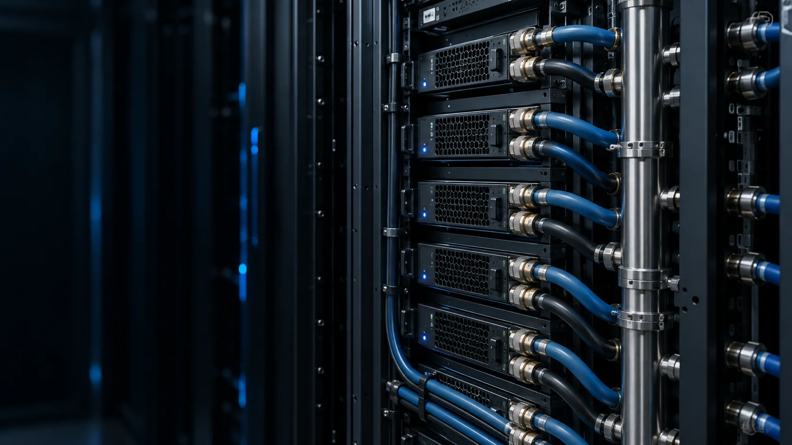

Холодные пластины
Cold plate отводят тепло от компонентов в жидкостный контур. Подбор по требованиям серверной платформы позволяет работать с концентрированной тепловой нагрузкой.
Плотность GPU-серверов меняет требования к отводу тепла. Прорабатываем cold plate, CDU и иммерсионное охлаждение под серверную платформу и ресурсы площадки — чтобы инженерные ограничения не сдерживали запуск AI/HPC.
Обсудить охлаждение AI/HPC ↗
Для AI-кластеров, GPU-серверов и стоек с высокой тепловой нагрузкой. Сценарии 50–150 кВт на стойку требуют расчёта питания и охлаждения, проверки серверной платформы и внешнего теплоотвода.
Cold plate отводят тепло от компонентов в жидкостный контур. Подбор по требованиям серверной платформы позволяет работать с концентрированной тепловой нагрузкой.
CDU связывает серверный контур с внешним холодоснабжением. Согласование температур, расхода и теплообмена помогает поддерживать условия работы IT-оборудования.
Immersion cooling — погружение совместимого оборудования в диэлектрическую среду. Оцениваем теплоотвод и регламент обслуживания, чтобы решение было пригодно для эксплуатации.
Контроль протечек и параметров контура с интеграцией в DCIM помогает эксплуатационной команде замечать отклонения и принимать меры до развития аварии.
Концепцию охлаждения с требованиями к питанию, теплоносителю и подключениям — основу для подготовки площадки и расчёта затрат на инженерную инфраструктуру.
Модели GPU-серверов, тепловая нагрузка на стойку, параметры теплоносителя, внешнее холодоснабжение и требования производителя.
PUE < 1,2 рассматриваем как целевой ориентир эффективности. Достижимость оцениваем по нагрузке, климату и всем инженерным системам ЦОД; экономию рассчитываем для конкретной площадки.
Открыть каталог Coolnet ↗Укажите серверную платформу, количество стоек и тепловую нагрузку. Проверим исходные данные для выбора схемы охлаждения и оценки готовности площадки.
Письмо можно отправить напрямую: info@corexengineering.kz